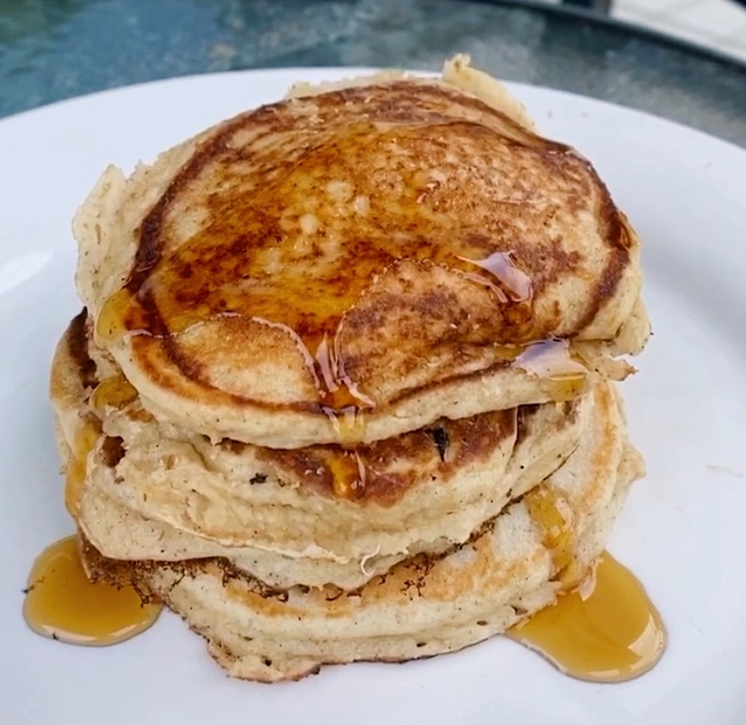
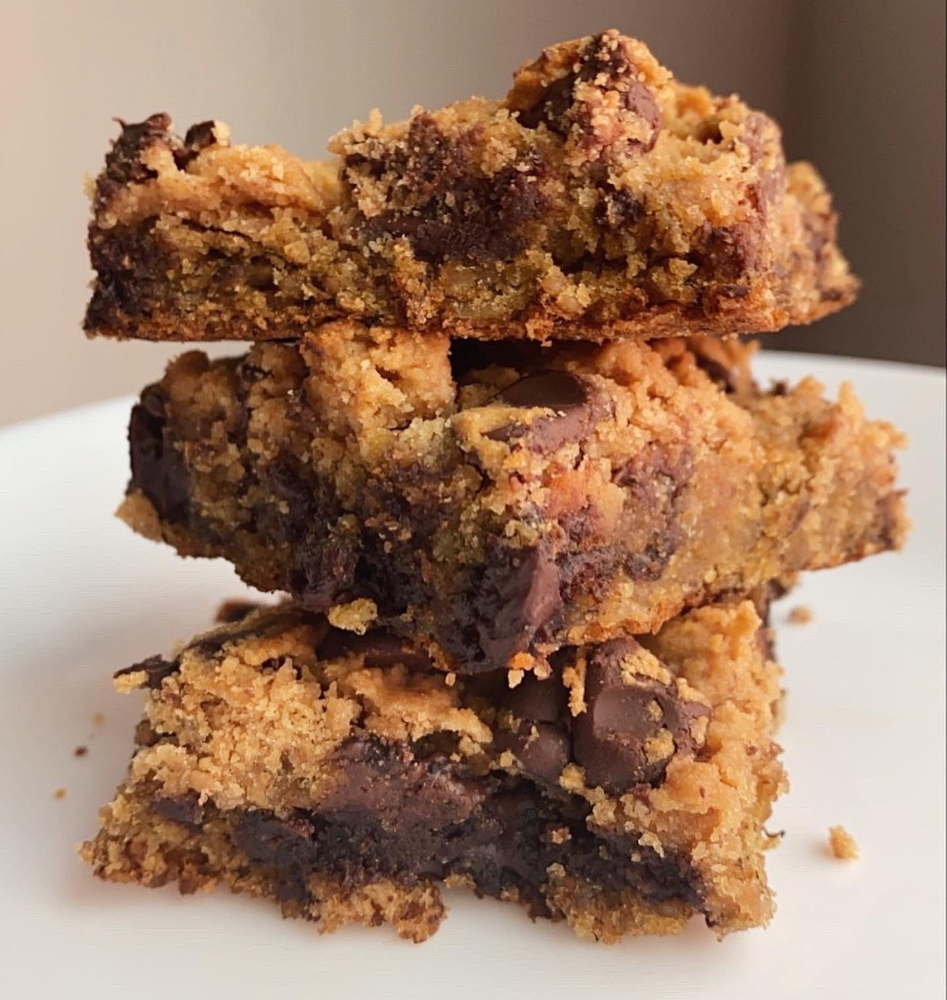
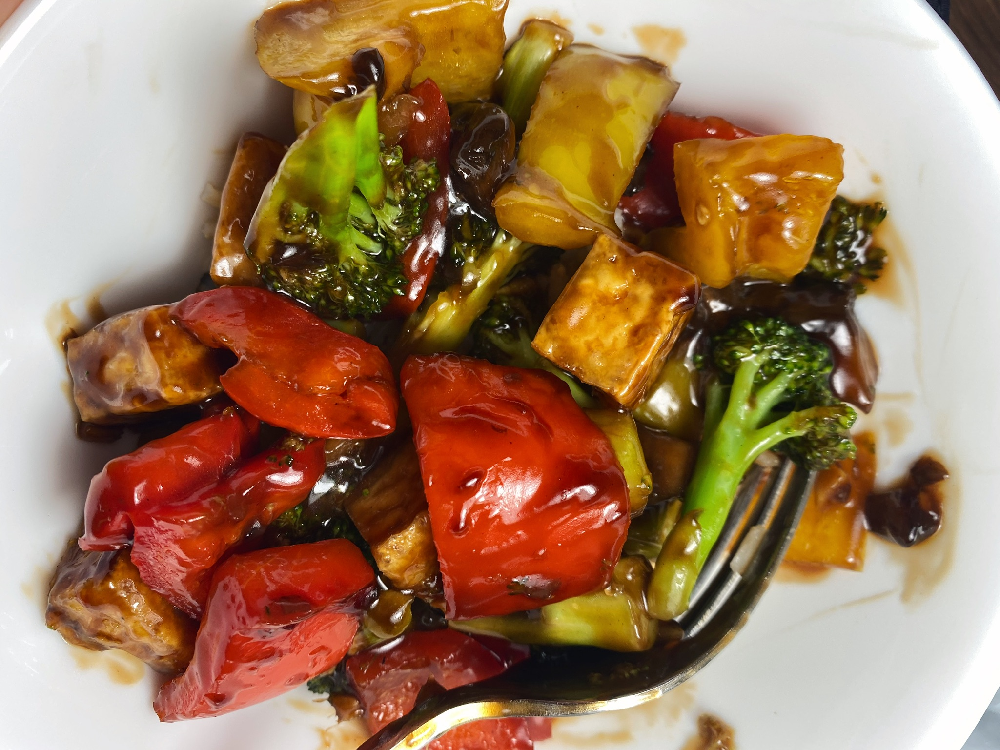
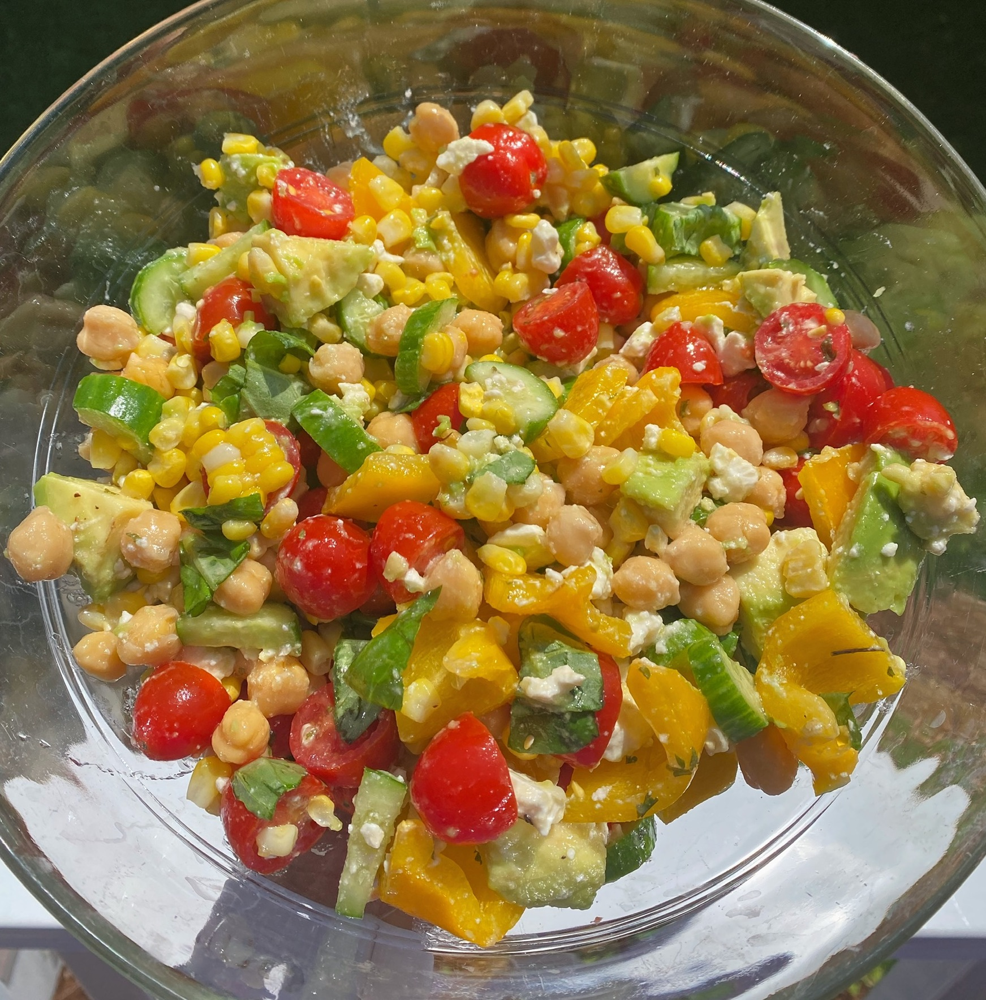

I love to cook! These are a few recipes I have created as I continue to learn how to fuel my body with delicious and nourishing foods.
On this page you will find recipes perfect for breakfast, dinner, desserts, and more!
Breakfast

Greek Yogurt Pancakes
Healthy and delicious pancakes. Perfect for when you wake up with a sweet tooth! Recipe makes one stack.
Ingredients:
1/2 cup Greek Yogurt
1 egg
1/2 tsp Vanilla Extract
1.5 tbsp Sugar
1/2 cup Oat Flour
1/4 tsp Baking Soda
1/2 tsp Baking Powder
1/4 tsp Cinnamon
1/4 tsp Salt
1 tbsp Milk
Pure Maple Syrup for Topping
Recipe:
Mix together Greek yogurt, egg, & vanilla. Add sugar, oat flour, regular flour, baking soda, baking powder, cinnamon, salt, and milk. Mix well! Cook on medium stovetop pan and top with maple syrup.
Sweets

Banana Cookie Dough Bars
These gooey and delicious chocolatey bars are refined grain free, gluten free, & dairy free. Super delicious too!
Ingredients:
Bottom Layer:
4 tbsp water
1.5 tbsp flax seed
2 overripe bananas
1 tsp vanilla
1/3 cup peanut butter
1 tbsp coconut oil
1 cup oats
1/3 cup coconut flour
1 tsp baking soda
1 tsp baking power
Dark Chocolate Chips
Top Layer:
1/3 cup peanut butter
2.5 tbsp coconut flour
1 tbsp honey
1 tbsp oat flour
1/4 tsp vanilla
Sprinkle of salt
Dark Chocolate Chips
Recipe:
Preheat oven to 350 degrees. Use a small bowl to mix the water and flax seeds and set aside. In a medium bowl using ingredients for the bottom layer combine mashed bananas, vanilla, peanut butter, and coconut oil- mix well! Next, add oats, coconut flour, baking soda, and baking powder. Finally stir in the chocolate chips. Spread mixture in a greased baking pan.
For the top layer use a small bowl to mix together peanut butter, coconut flour, honey, oat flour, vanilla, and salt. After combined mix in the chocolate chips and spread on top of banana mixture!
Bake for 20 minutes.
Main Courses

Tofu Ricotta Pasta
Amazing vegan pasta dish that tastes and looks just as creamy and cheesy as ricotta alfredo sauce! Add as many veggies as you’d like.
Ingredients:
Sauce:
7.5 ounces Extra Firm Tofu
4 tbsp Olive Oil
1.5 tsp Apple Cider Vinegar
1 tsp Minced Garlic
2 Ears of Corn
1 tbsp Nutritional Yeast
Italian Seasoning
Garlic Powder
Salt & Pepper
Rest of Dish:
Broccoli
Baby Bella Mushrooms
Handful of Spinach
Handful of Kale
Olive Oil
Box of Pasta (I recommend Lentil Pasta!
Recipe:
Prepare pasta as instructed on the box. While the pasta is cooking combine all sauce ingredients in a blender until smooth. Use a good amount of spices if you want a flavorful sauce! Next, on a large stovetop pan prepare vegetables. Add olive oil, broccoli, mushrooms, spinach, and kale and cook for about 8 minutes, consistently flipping. When the pasta is done add it to the pan with the veggies and pour the sauce from the blender on top. Stir everything together for a minute until combined and serve hot!
Side Dishes

Chickpea Corn Salad
A simple and delicious salad. Perfect for a side dish or even a main meal!
Ingredients:
Bell Peppers
Broccoli
Zucchini
Sweet Potatoes
2 Ears of Corn
Cherry Tomatoes
Snap Peas
Cucumbers
Spinach
Fresh Lemon Juice
2 tbsp Olive Oil
Goat Milk Feta Cheese
Recipe:
Preheat oven to 350. Cut up bell peppers, broccoli, zucchini, and sweet potatoes and place them on a baking sheet with olive oil for 30 minutes or until cooked. While that’s cooking boil a pot of water. Husk the corn and add 2 ears. Cook for about 7 minutes. While that’s boiling cut the cherry tomatoes in half and chop up the snap peas and cucumbers. In a large bowl add a handful of spinach. Next add in all of the veggies & corn! Toss everything with the juice of half a lemon and 2 tbsp olive oil!! Add goat milk feta on top and serve!